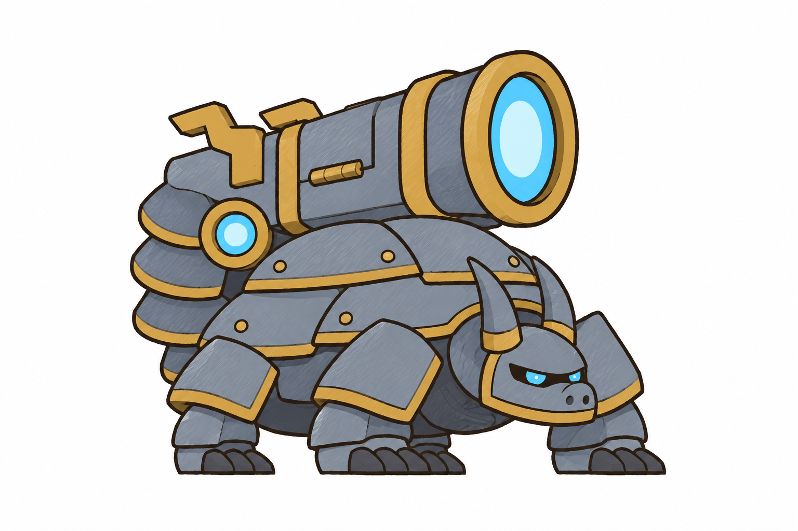
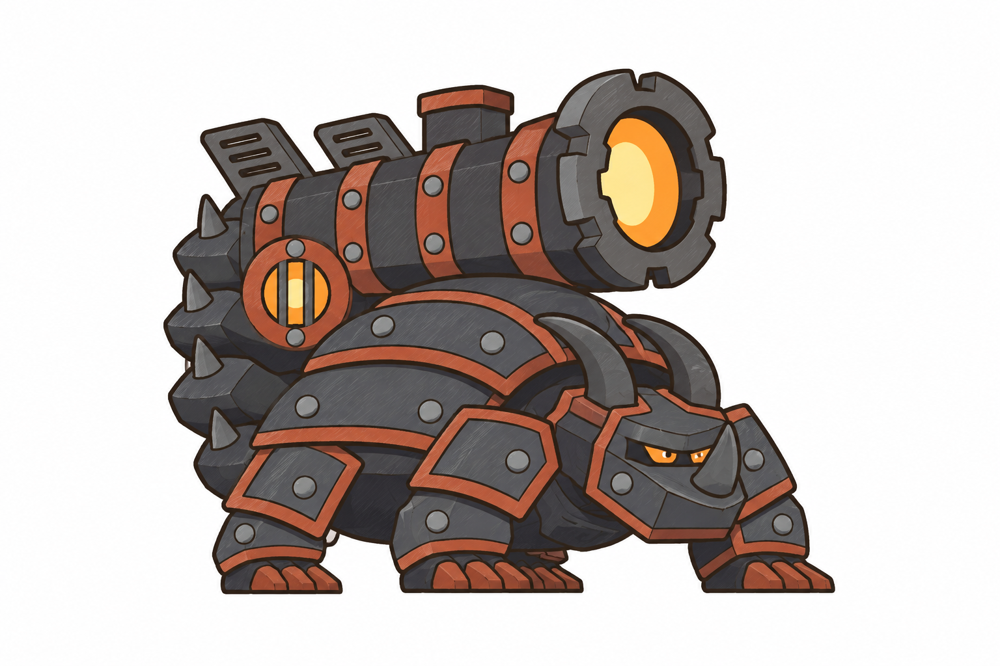
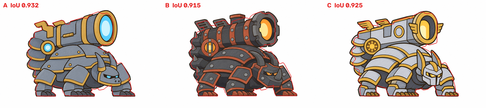

Con gốc monster_3629 (khung 0 idle): chỉ để so dáng, chỗ, cỡ từng mảnh

A (đề xuất) thép xám lam + đồng thau, lõi điện lam: mũ giáp heo rừng mắt lam xếch, hai sừng lưỡi thép, nòng tròn hai đai đồng, họng loe vành đồng lòng lam, lõi ô cửa đồng, tay cầm chữ C, bốn đốt đuôi viền đồng. Khớp hình bóng 0,93

B sắt đen rèn + đồng đỏ, lõi lửa lò cam: mũ tê giác một sừng mũi, nòng ba đai đồng đỏ đinh to, họng răng cưa, cửa lò có song, ống khói, vây tản nhiệt, đốt đuôi gai tù. Khớp hình bóng 0,92C thép bạc trắng + vàng kim, lõi vàng: mũ hiệp sĩ khe chữ T, tai giáp dựng, thân pháo dáng hộp, họng tròn có cánh vàng, lõi mặt trời, cánh vàng thay móc, vảy đuôi viền vàng. Khớp hình bóng 0,93

So con gốc: viền đỏ là hình bóng con gốc chồng lên A, B, C